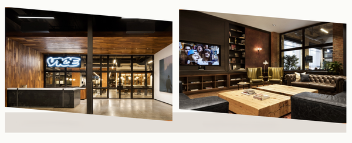
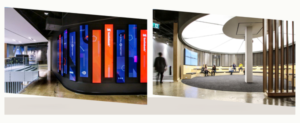
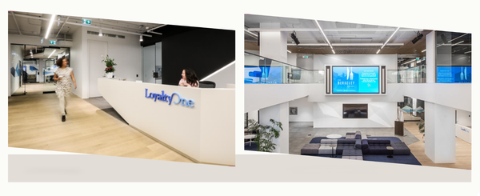
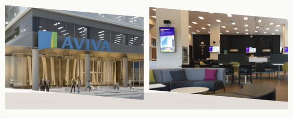
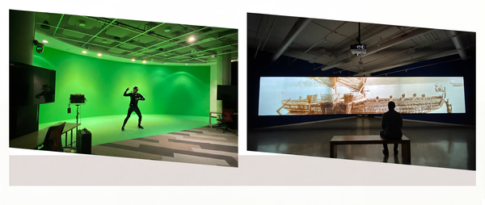
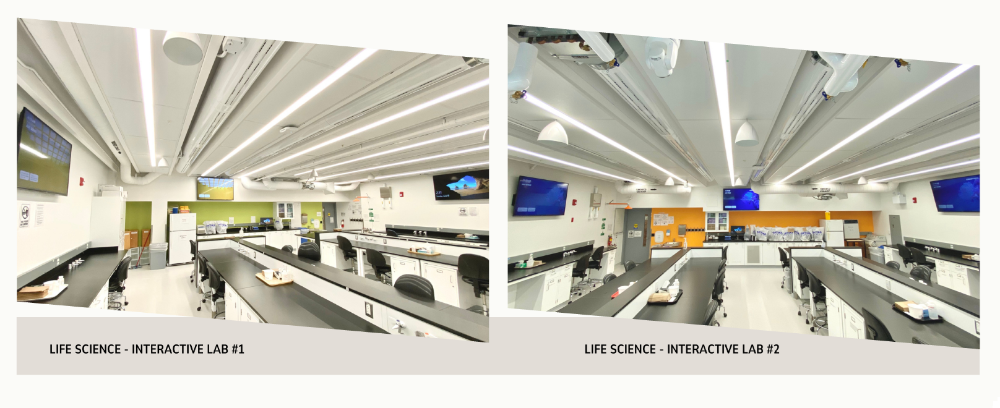
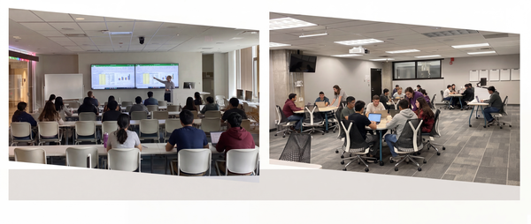

The Architecture
of Execution
There’s nothing quite like the rush of crafting a streamlined roadmap or a perfectly defined plan, knowing that every line of documentation is removing risk and accelerating the path to delivery. I’ve spent my entire career in the trenches of technical systems-engineering, and leading teams to deliver high-stakes, multi-million dollar builds. I know that elegance in a project plan is just as critical as elegance in the design itself.
My vocation is driven by the satisfaction of seeing complexity resolved into profitable, on-time delivery. My passion? It’s fixing that systemic friction and integrating tech fluency directly into the leadership stack. It’s the thrill of partnering with developers and directors to master the constraints-whether they’re technical, budgetary, or regulatory-and then delivering projects that are sound and ruthlessly efficient. I approach every engagement not as a detached administrator, but with the mindset of an Execution Architect. My job is to prove that rigorous, technically-informed management is the single biggest KPI you can optimize for. Ready to see the results? Check out my awesome work!
Engineering +
Leadership

VICE MEDIA

SCOTIABANK

LOYALTY ONE

AVIVA

UNIVERSITY HUB

SCIENCE LAB

LEARNING CENTRE
The Pursuit of
the Extra-ordinary
I build the space where people and technology truly meet - not in theory, but in the real world, where ideas become experiences that make life work a little better. My focus is on designing intelligent systems that feel human: intuitive, adaptive, and deeply connected to the way we think and create.
To me, innovation is an act of empathy. It’s about crafting tools that understand us as much as we understand them, translating complexity into clarity and making intelligence feel alive.
Outside the lab and screen, I draw inspiration from the world’s textures, the rhythm of sound, the storytelling of film, the ideas tucked between the pages of a good book; I’m fueled by food that tells a story, by travel that opens new perspectives, and by the endless curiosity of exploring cultures that see the world differently. And always, I come home to my wife and two boys, my favorite collaborators in wonder, who remind me that curiosity is the spark behind every great design and innovation.